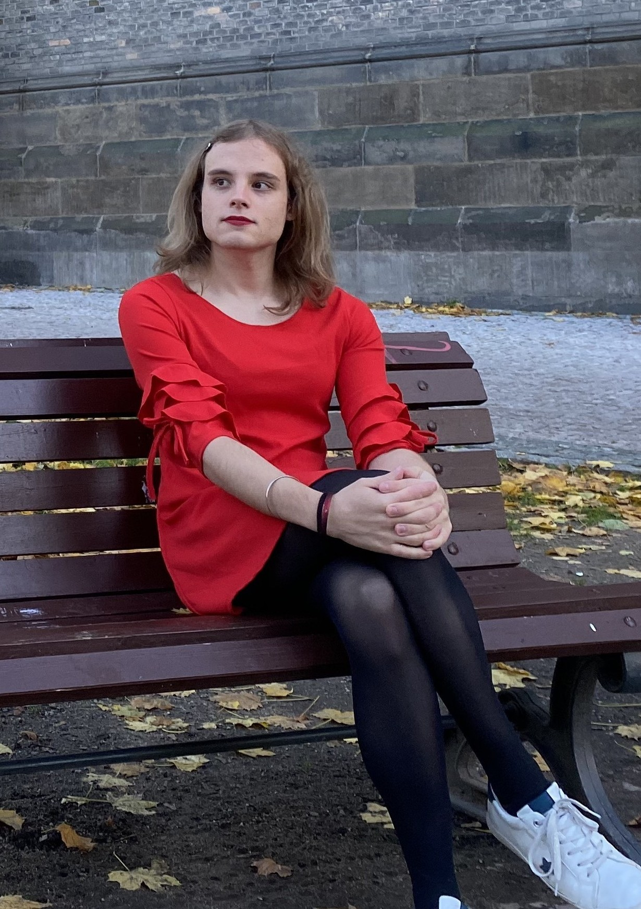

Mathieu Chanavat
 I am a graduate student in math and computer science. My main interests are category theory, homotopy theory and their applications to computer science. I'm currently a visiting researcher at CIIRC in Prague, where I work with Josef Urban to formalize some results in topos theory. I'll be interested in starting a PhD in a related area by spring 2023.
After three years of "classe préparatoire" (intense classes of math and physics), I went for three years at École Centrale de Lille were I studied general computer science, AI and data science. During these three years, I also obtained a bachelor and a master of mathematics, focused on probabilities and functional analysis. During the year 2021-2022, I was a student at the LMFI Master where I developed my skills about theoretical computer science, category theory, homotopy theory, and logic in general. Here's my CV.
Academic work
- Cubical Type Theory Inside a Presheaf Topos (Summer '22) pdf
Summer '22 internship, for my Master's thesis. I worked on the use of Kripke-Joyal semantics to prove that the presheaves over the category of free de Morgan algebras are a model of cubical type theory. Here are the slides for my defense. I was supervised by Pierre-Louis Curien.
- Category theory in Coq (January '22) github
Final project of the LMFI's course 'Functional programming and formal proofs in Coq' where a student and I (re)implemented basics of category theory in Coq.
- Loops of Csörgő Type and the AIM Conjecture (Summer '21) pdf
Summer '21 internship. I worked on the AIM conjecture and tried to develop a computational approach to find Csörgő loops (a certain kind of non-associative structure) of size less than 128. Interestingly enough, the AIM conjecture was solved (independently of me!) by Michael Kinyon and Bob Veroff during my internship. Some of my code can be found here. You can find here the slides of a talk I gave during this internship.
Personal notes
- On the Yoneda Lemma (2022) pdf
Small paper where I try to give some intuition about the notion of presheaf, prove the Yoneda Lemma and the density formula.
- Adjunctions, monads, and monadicity (2022) pdf
This paper is a self-contained proof, in full details, and from (almost) scratch of the monadicity theorem. We only assume the reader to be familiar with the basics of categories, functors, natural transformations, and the notion of coequalizer. We will give some examples and applications in further work.
You can send me an email at: mathieu [dot] chanavat [at] gmail.com. My pronouns are they/them.